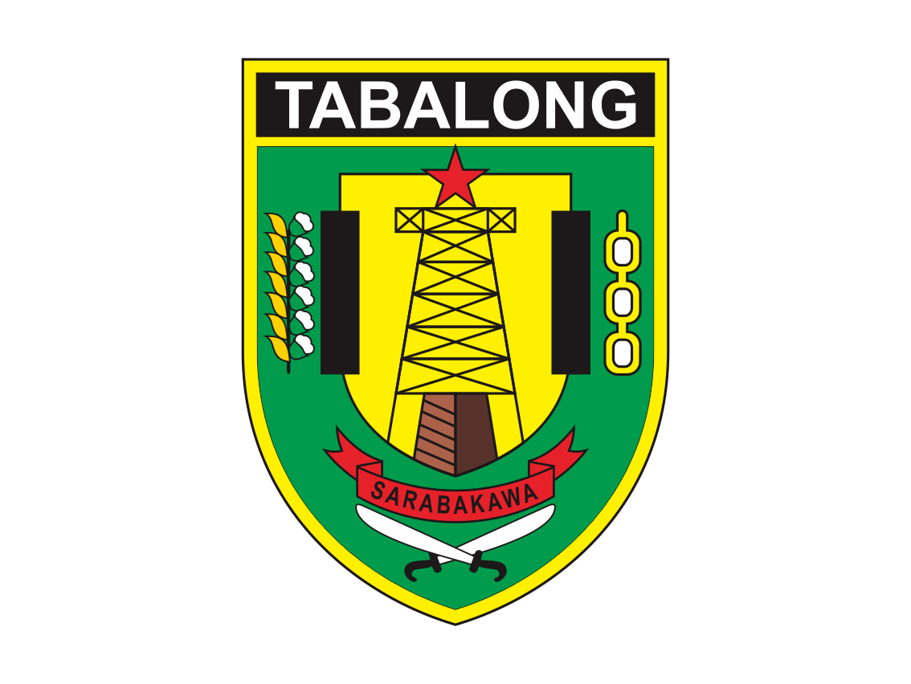
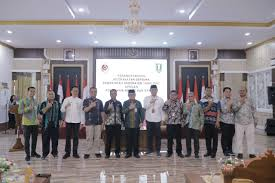
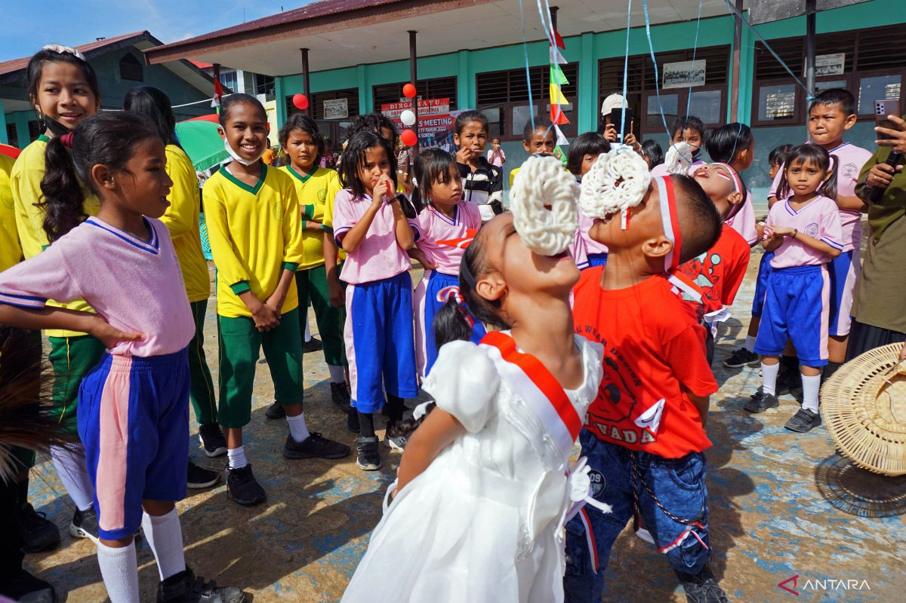
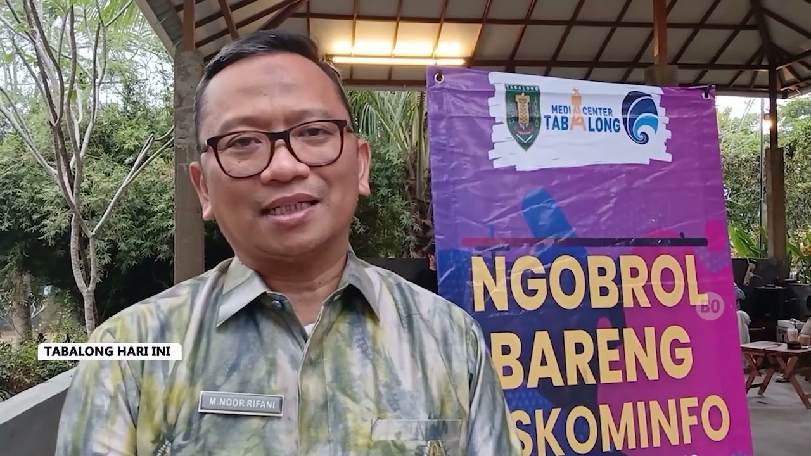

PEMERINTAH KABUPATEN TABALONG
Beranda
Profil
UMKM
Berita Daerah
Administrasi
Jendela Informasi
Pengumuman

MOU Pemkab Tabalong dan Politeknik Negeri Banjarmasin ( POLIBAN )
Kabar Terbaru
Seluruh Partai Politik Nyatakan Sikap Damai Pilkada 2024

Meriahnya Peringatan HUT RI di SDN 5 Mangkupum Tabalong

Ngobrol Bareng Diskominfo Bahas Digitalisasi Ekonomi Kreatif
Upaya Kendalikan Inflasi, Pemkab dan TNI Gelar Pasar Murah